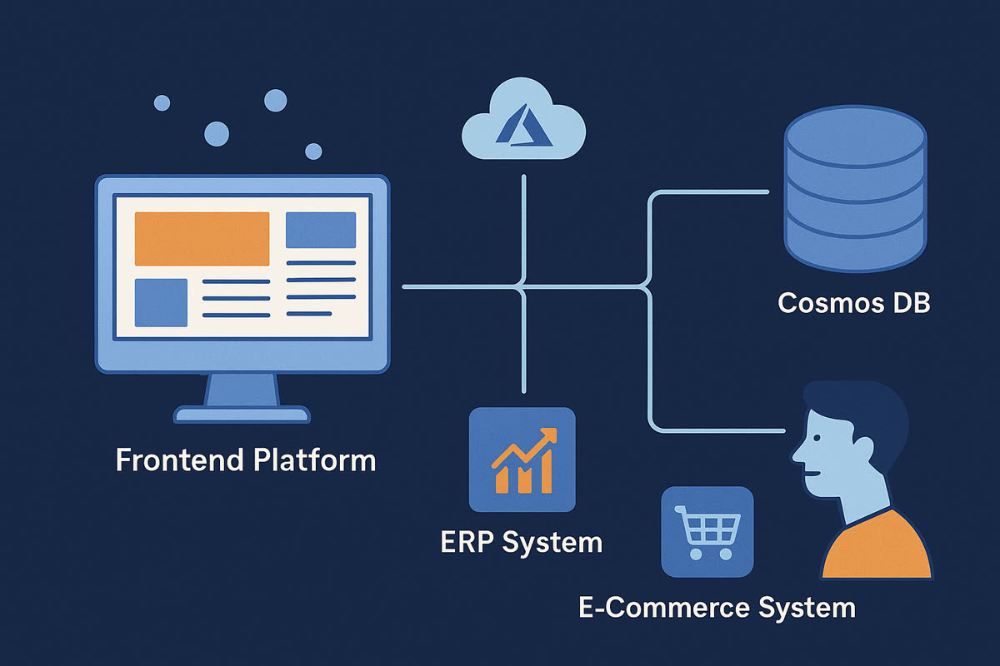
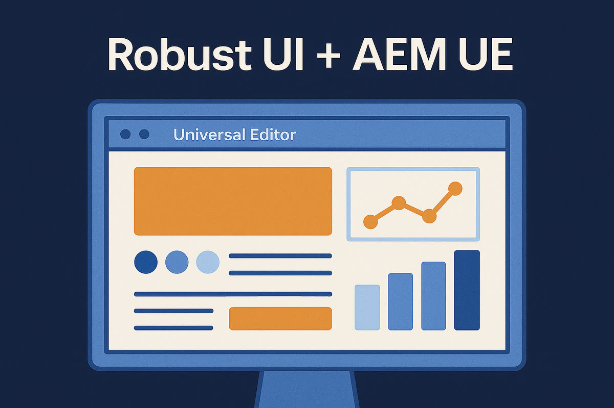

First published as a LinkedIn article on May 28, 2025. Rewritten for this site in October 2026. The scenarios are illustrative: I write "it's possible to do this" rather than "we did this x times" to protect current and past clients.
What changed since I wrote this
I kept the original article light on omnichannel strategy and AEM's full headless capabilities on purpose, and said I'd come back to them. I did in July 2025: AEM headless and omnichannel architecture walks through three diagrams for getting content out of AEM to websites, apps and email. A week after this article, I also put headless next to the other ways to build on AEM in Making sense of 7 AEM capabilities.
The advice below is what I wrote in May 2025. The two Adobe mechanics I show, persisted queries and Universal Editor instrumentation, are checked against Adobe's current documentation and linked.
When the frontend came before the CMS
Picture a client that has invested heavily in its frontend stack. Maybe it's a sleek Next.js application, or maybe the team has fallen in love with Vue. Maybe the UI is tightly coupled to an ERP or an ecommerce system. Switching all of that out to fit a CMS feels like a non-starter. In many modern organizations the frontend is no longer just a layer. It's the foundation.
Sometimes content comes second, if at all. The UI must go live, and content follows.

When AEM comes in as a headless CMS, some clients worry they're stepping back in time. They expect to lose WYSIWYG, in-context editing and the power their authors once had. I've seen this cycle repeat across 18 years in content management. This time, it can be different.
Frontend teams often want full ownership, too. HTL components were a step up from JSPs, sure. A fully decoupled frontend lets the team own the entire experience, from layout to routing, animation to rendering.
Start with one page and three components
A smart starting point is to start together and start small. One approach: spin up a single page with just three components. Don't boil the ocean. Build trust and a shared vocabulary first. Get one working pattern, and learn together.
In the explorations that go well, you'll often find working sessions every day, sometimes twice a day, during the proof of concept. They're more than a sync. The teams solve problems together and walk through the code and the content structures side by side.
Use persisted queries so responses can be cached
GraphQL persisted queries have emerged as a clear win for security and caching. Adobe's persisted queries documentation explains the mechanism. A standard GraphQL query is sent as a POST, and the response to a POST can't easily be cached. A persisted query is saved in AEM ahead of time and run with a GET, and a GET response can be cached at the Dispatcher and the CDN. The two URL formats, as Adobe documents them:
GET <AEM_HOST>/graphql/execute.json/<PERSISTENT_PATH>
GET <AEM_HOST>/graphql/execute.json/<PERSISTENT_QUERY_PATH>;variable1=value1;variable2=value2Variables go on the end of the URL, each after a semicolon. That detail matters for caching. Every combination of values is its own URL, so it's its own cache entry.
The model below shows what that means for traffic. Each press of "Send request" is one request from the frontend, and it starts with five already sent. Pick the regular query or the persisted one, pick a locale, and send: a POST goes to AEM every time, while a repeat GET for the same URL is answered by the cache and never reaches AEM.
locale
GET /graphql/execute.json/my-site/articles-by-locale;locale=en
Five requests, in order. Two POSTs and the first GET for each locale reach AEM. The repeated GET is served from the cache.
| # | Request | Cache | Reached AEM |
|---|---|---|---|
| 1 | POST locale=en | not cacheable | yes |
| 2 | POST locale=en | not cacheable | yes |
| 3 | GET ;locale=en | miss, stored | yes |
| 4 | GET ;locale=en | hit | no |
| 5 | GET ;locale=de | miss, stored | yes |
There's nuance, though. With 12 page templates and a library of 30 or more components, you'll want to avoid writing the same query definitions over and over.
Plan for translation, personalization and preview
Internationalization is front and center too. In AEM as a Cloud Service, structured content, language roots and translation workflows help manage global scale. Going headless doesn't mean ignoring localization. Translation workflows and translation projects apply here just as much.
Personalization is another layer that fits well. It's possible to publish content fragments into Adobe Target or other personalization platforms. In some cases those fragments are personalized for persona segments mapped from Adobe Experience Platform or other data sources. I'd prefer the targeting tool to choose which content to show, and avoid persona tagging in AEM. Sometimes that isn't practical, and that's OK. All of this allows scalable, dynamic experiences without coupling the logic into the frontend.
Finally, preview matters. In-context preview in AEM as a Cloud Service reconnects authors to what they're publishing, even in a decoupled setup. With Universal Editor instrumentation, editors see their edits reflected live in the experience. Instrumentation is work the frontend team does in its own markup. These lines are from Adobe's Universal Editor getting started guide:
<meta name="urn:adobe:aue:system:aemconnection" content="aem:https://localhost:4502">
<script src="https://universal-editor-service.adobe.io/cors.js" async></script>
<ul data-aue-resource="urn:aemconnection:/content/example/list" data-aue-type="container">
<p data-aue-prop="name" data-aue-type="text">Jane Doe</p>The meta tag points the editor at the AEM instance, the script lets the editor talk to the page, and the data-aue-* attributes tie each element to the content and property behind it. The frontend still renders the page its own way. The attributes are what let an author click an element and edit the content behind it.
Where it works, and when I wouldn't recommend it
In successful models, the frontend is already up and running. Universal Editor becomes an additive layer rather than a blocker. Strong frontend teams thrive here. They move fast, deliver rich experiences, and AEM becomes the source of structured truth.
If the frontend leans into server-side rendering, for example Next.js in production mode with React Server Components, the performance story is strong: fast loads, prefetching, and SEO-friendly markup with minimal compromise.

Would I recommend AEM headless to everyone? Not quite. It depends on your team setup. If you have a passionate frontend team deeply committed to its stack, or a UI tightly coupled with another system, then forcing classic AEM Sites authoring might be the real architectural mistake. Maybe even an architectural sin.